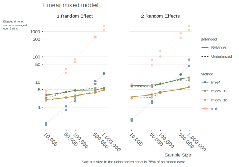
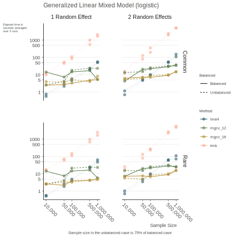

Table of Contents
Introduction
With mixed models, it is easy to run into data that is larger in size than some more typical data scenarios. Consider a cross-sectional data set with 200 individuals. This is fairly small data. Now, if we observe them each five times, as in a longitudinal setting, we suddenly have 1000 observations. There may be less than 200 countries in the world, but if we survey 100s or 1000s of people in many of them, we suddenly have a notable data set size, and still would potentially like to model a country-level random effect. What are our options when dealing with possibly gigabytes of data?
This post will demonstrate an approach that can be used with potentially millions of data points, multiple random effects, and possibly other complexities. First we’ll demonstrate how to get typical mixed model results using the approach used for generalized additive models. We’ll compare the output of the GAM, lme4, and even fully Bayesian mixed models. Then we’ll show some timings to compare the speed of the different approaches of common tools, and summarize some findings from other places.
R Packages for Mixed Models with Large Data
While many tools abound to conduct mixed models for larger data sizes, their limitations can be found pretty quickly. R’s lme4 is a standard, but powerful mixed model tool. More to the point, it is computationally efficient, such that it can handle very large sample sizes for simpler mixed models. For linear mixed models this can include hundreds of thousands of observations with possibly multiple random effects, still running on a basic laptop. For such models, it’s still largely the tool of choice, and its approach has even been copied/ported into other statistical packages.
We’ll first create some data to model. This is just a simple random intercepts setting.
set.seed(12358)
N = 1e6 # total sample size
n_groups = 1000 # number of groups
g = rep(1:n_groups, e = N/n_groups) # the group identifier
x = rnorm(N) # an observation level continuous variable
b = rbinom(n_groups, size = 1, prob=.5) # a cluster level categorical variable
b = b[g]
sd_g = .5 # standard deviation for the random effect
sigma = 1 # standard deviation for the observation
re0 = rnorm(n_groups, sd = sd_g) # random effects
re = re0[g]
lp = 0 + .5*x + .25*b + re # linear predictor
y = rnorm(N, mean = lp, sd = sigma) # create a continuous target variable
y_bin = rbinom(N, size = 1, prob = plogis(lp)) # create a binary target variable
d = tibble(x, b, y, y_bin, g = factor(g))Let’s take a look at the data first.
| index | x | b | y | y_bin | g |
|---|---|---|---|---|---|
| 1 | -0.378 | 0 | -0.278 | 1 | 1 |
| 2 | -0.812 | 0 | -0.343 | 0 | 1 |
| 3 | 0.218 | 0 | -0.810 | 1 | 1 |
| 4 | 1.529 | 0 | 0.465 | 1 | 1 |
| 5 | -1.877 | 0 | -1.570 | 0 | 1 |
| 6 | -0.427 | 0 | 0.047 | 0 | 1 |
| 999995 | -1.181 | 1 | -1.111 | 0 | 1000 |
| 999996 | -1.487 | 1 | 0.563 | 1 | 1000 |
| 999997 | -1.236 | 1 | -0.603 | 0 | 1000 |
| 999998 | 0.412 | 1 | 0.736 | 0 | 1000 |
| 999999 | -0.644 | 1 | -1.257 | 1 | 1000 |
| 1000000 | 0.409 | 1 | 0.520 | 1 | 1000 |
Now with the data in place, let’s try lme4 to model the continuous outcome.
library(lme4)
system.time({
mixed_big = lmer(y ~ x + b + (1|g))
})
user system elapsed
8.35 1.25 9.64
summary(mixed_big, cor = FALSE)
Linear mixed model fit by REML ['lmerMod']
Formula: y ~ x + b + (1 | g)
REML criterion at convergence: 2841256
Scaled residuals:
Min 1Q Median 3Q Max
-4.6066 -0.6743 -0.0004 0.6744 5.0367
Random effects:
Groups Name Variance Std.Dev.
g (Intercept) 0.2509 0.5009
Residual 0.9978 0.9989
Number of obs: 1000000, groups: g, 1000
Fixed effects:
Estimate Std. Error t value
(Intercept) 0.0364754 0.0223332 1.633
x 0.5017616 0.0009987 502.409
b 0.1904534 0.0317430 6.000This is great! We just ran a mixed model for 1,000,000 observations and 1,000 groups for our random effect in just a few seconds.
But one problem comes as soon as you move to the generalized mixed model, e.g. having a binary outcome, or include additional complexity while still dealing with large data. The following is essentially the same model, but for a binary outcome.
system.time({
mixed_big_glmm = glmer(y_bin ~ x + b + (1|g), family = binomial)
})
user system elapsed
235.84 44.18 280.60 To begin with, you shouldn’t be worried about models taking a few minutes to run, or even a couple hours. Once you have your model(s) squared away, the testing of which can be done on a smaller sample of the data set, there is no need to repeatedly run it. But in this case we had a greater than 15 fold increase in time for a very simple data scenario. So it’s good to have options when you need them. Let’s turn to those.
Additive Models as Mixed Models
Simon Wood’s wonderful work on generalized additive models (GAM) and the mgcv package make it one of the better modeling tools in the R kingdom. As his text(S. N. Wood 2017) and other work shows, additive models constructed be posited in a similar way as mixed models, and he exploits this by providing numerous ways to include and explore random effects in the GAM approach. One key difference between the GAM and a standard linear mixed model approach is the way parameters are estimated. For the GAM, the random effects are estimated as are other fixed effect coefficients. Those random effects are penalized, in a similar way as L2/ridge regression. The ‘fixed effects’ are not penalized, and so that part is basically just a generalized linear model. As we will see though, the results will be nearly the same between mgcv and lme4.
The following demonstrates the link between the approaches by showing a model that includes a random intercept and slope. We will use the standard mgcv approach for specifying a smooth term, but alternatives are shown for those familiar with the package.
library(lme4)
library(mgcv)
mixed_model = lmer(
Reaction ~ Days + (1 | Subject) + (0 + Days | Subject),
data = sleepstudy
)
ga_model = gam(
Reaction ~ Days + s(Subject, bs = 're') + s(Days, Subject, bs = 're'),
data = sleepstudy,
method = 'REML'
)
# Using gamm and gamm4 for the same model
# ga_model = gamm(
# Reaction ~ Days ,
# random = list(Subject = ~ 0 + Days),
# data = sleepstudy,
# method = 'REML'
# )
#
# ga_model = gamm4::gamm4(
# Reaction ~ Days,
# random = ~ (Days||Subject),
# data = sleepstudy,
# REML = TRUE
# )Note that we use s to denote a smooth term in the parlance of additive models, and the bs = 're' specifies that we want it as a random effect (as opposed to a spline or other basis function). The second smooth term s(Days, Subject, bs = 're') denotes random coefficients for the Days covariate.
Comparison of GAM to the Mixed Model
Aside from the syntax, the underlying model between the two is the same, and the following shows that we obtain the same results for both lme4 and mgcv.
summary(mixed_model, cor = FALSE)
Linear mixed model fit by REML ['lmerMod']
Formula: Reaction ~ Days + (1 | Subject) + (0 + Days | Subject)
Data: sleepstudy
REML criterion at convergence: 1743.7
Scaled residuals:
Min 1Q Median 3Q Max
-3.9626 -0.4626 0.0204 0.4653 5.1860
Random effects:
Groups Name Variance Std.Dev.
Subject (Intercept) 627.50 25.050
Subject.1 Days 35.86 5.989
Residual 653.58 25.565
Number of obs: 180, groups: Subject, 18
Fixed effects:
Estimate Std. Error t value
(Intercept) 251.405 6.885 36.514
Days 10.467 1.560 6.711
summary(ga_model)
Family: gaussian
Link function: identity
Formula:
Reaction ~ Days + s(Subject, bs = "re") + s(Days, Subject, bs = "re")
Parametric coefficients:
Estimate Std. Error t value Pr(>|t|)
(Intercept) 251.405 6.885 36.513 < 2e-16 ***
Days 10.467 1.560 6.712 3.67e-10 ***
---
Signif. codes: 0 '***' 0.001 '**' 0.01 '*' 0.05 '.' 0.1 ' ' 1
Approximate significance of smooth terms:
edf Ref.df F p-value
s(Subject) 12.94 17 89.29 4.56e-07 ***
s(Days,Subject) 14.41 17 104.56 1.82e-12 ***
---
Signif. codes: 0 '***' 0.001 '**' 0.01 '*' 0.05 '.' 0.1 ' ' 1
R-sq.(adj) = 0.794 Deviance explained = 82.7%
-REML = 871.83 Scale est. = 653.58 n = 180I don’t want to go into the details of the printout for mgcv, but it is worth noting that the parametric part is equivalent to the fixed effects portion of the lme4 output. Likewise the smooth terms output is related to the random effects, but we’ll extract them in a manner more suited to typical mixed model output instead. So let’s compare the variance components, and get them ready for later comparison to bam results. Note, I’ve been using mgcv a lot for mixed models lately, so I created a package called gammit to provide tidier output in general, and which is more similar to lme4. I note the corresponding mgcv function where appropriate.
library(gammit)
# extract just the fixed effects for later.
mixed_fe = fixef(mixed_model)
gam_fe = extract_fixed(ga_model) # coefs with se and confidence interval
# variance components
lmer_vcov = data.frame(VarCorr(mixed_model))
gam_vcov = extract_vc(ga_model) # cleaner gam.vcomp| grp | var1 | vcov | sdcor |
|---|---|---|---|
| Subject | (Intercept) | 627.500 | 25.050 |
| Subject.1 | Days | 35.864 | 5.989 |
| Residual | NA | 653.580 | 25.565 |
| component | std.dev | lower | upper | variance | proportion |
|---|---|---|---|---|---|
| Subject | 25.051 | 16.085 | 39.015 | 627.571 | 0.477 |
| Days|Subject | 5.988 | 4.025 | 8.908 | 35.858 | 0.027 |
| scale | 25.565 | 22.792 | 28.676 | 653.582 | 0.496 |
The bam approach
For large data, mgcv provides the bam function. For this small data setting we don’t really need it, but we can establish that we would get similar results using it without having to wait. We will see the benefits when we apply bam to large data later. None of our syntax changes, just the function.
ba_model = bam(
Reaction ~ Days + s(Subject, bs='re') + s(Days, Subject, bs='re'),
data = sleepstudy
)
bam_fe = extract_fixed(ba_model)
bam_vcov = extract_vc(ba_model)How does it work? The function uses a parallelized approach where possible, essentially working on subsets of the model matrices simultaneously. Details can be found in the references(Li and Wood 2019)(S. N. Wood, Goude, and Shaw 2015a)(S. N. Wood et al. 2017), but basically mgcv parallelizes the parts that can be, and additionally provides an option to discretize the data to work with the minimal information necessary to produce viable estimates. The following uses the discrete option. As there isn’t really anything to discretize with so little data, this is just to demonstrate the syntax.
ba_d_model = bam(
Reaction ~ Days + s(Subject, bs='re') + s(Days, Subject, bs='re'),
data = sleepstudy,
discrete = TRUE
)
bam_d_fe = extract_fixed(ba_d_model)
bam_d_vcov = extract_vc(ba_d_model)Fixed effects comparison
We start by comparing the fixed effects of all models run thus far. No surprises here, the results are the same.
| Model | Intercept | Days |
|---|---|---|
| mixed | 251.405 | 10.467 |
| gam | 251.405 | 10.467 |
| bam | 251.405 | 10.467 |
| bam_d | 251.405 | 10.467 |
Let’s examine the standard errors. Note that there are options for the GAM models for standard error estimation, including a Bayesian one. For more details, see ?gamObject, but I will offer the summary:
Ve
frequentist estimated covariance matrix for the parameter estimators. Particularly useful for testing whether terms are zero. Not so useful for CI’s as smooths are usually biased.
Vp
estimated covariance matrix for the parameters. This is a Bayesian posterior covariance matrix that results from adopting a particular Bayesian model of the smoothing process. Particularly useful for creating credible/confidence intervals.
Vc
Under ML or REML smoothing parameter estimation it is possible to correct the covariance matrix Vp for smoothing parameter uncertainty. This is the corrected version.
We will use the Bayesian estimates (Vp), but for this setting there are no appreciable differences. I expand the digits to show they are in fact different to some decimal place.
| Model | Intercept | Days |
|---|---|---|
| mixed | 6.88510 | 1.55967 |
| gam | 6.88540 | 1.55956 |
| bam | 6.88538 | 1.55957 |
| bam_d | 6.88538 | 1.55957 |
Variance components comparison
Now we move to the variance component estimates. Reported are the standard deviations for subject level random effects for intercept, Days coefficient, and residual.
| Intercept | Days | Residual | |
|---|---|---|---|
| mixed | 25.050 | 5.989 | 25.565 |
| gam | 25.051 | 5.988 | 25.565 |
| bam | 25.051 | 5.988 | 25.565 |
| bam_d | 25.051 | 5.988 | 25.565 |
We can also look at their interval estimates. We use the profile likelihood for the lme4 mixed model. In this case we can see slightly wider and somewhat different boundary estimates for the variance components, but not too dissimilar.
| Model | component | lower | upper | width |
|---|---|---|---|---|
| mixed | Intercept | 15.2587 | 37.7865 | 22.5279 |
| Days | 3.9641 | 8.7691 | 4.8051 | |
| Residual | 22.8806 | 28.7876 | 5.9070 | |
| gam | Subject | 16.0854 | 39.0150 | 22.9297 |
| Days|Subject | 4.0252 | 8.9083 | 4.8830 | |
| Residual | 22.7917 | 28.6763 | 5.8845 | |
| bam | Subject | 16.0853 | 39.0150 | 22.9297 |
| Days|Subject | 4.0253 | 8.9083 | 4.8830 | |
| Residual | 22.7918 | 28.6763 | 5.8845 | |
| bam_d | Subject | 16.0853 | 39.0150 | 22.9297 |
| Days|Subject | 4.0253 | 8.9083 | 4.8830 | |
| Residual | 22.7918 | 28.6763 | 5.8845 |
Estimated random effects
Now let’s look at the random effect estimates.
mixed_re = ranef(mixed_model)[[1]] %>%
rename(mixed_Subject = `(Intercept)`, `mixed_Days|Subject` = Days)
gam_re_init = extract_ranef(ga_model)
bam_re_init = extract_ranef(ba_model)
bam_d_re_init = extract_ranef(ba_d_model)We’ll start with the random effects for the intercept. To several decimal places, we start to see differences, so again we know they aren’t doing exactly the same thing, but they are coming to the same conclusion.
| mixed_Subject | gam_Subject | bam_Subject | bam_d_Subject |
|---|---|---|---|
| 1.51170 | 1.51272 | 1.51270 | 1.51270 |
| -40.37201 | -40.37397 | -40.37390 | -40.37390 |
| -39.17951 | -39.18111 | -39.18104 | -39.18104 |
| 24.51881 | 24.51893 | 24.51890 | 24.51890 |
| 22.91419 | 22.91446 | 22.91443 | 22.91443 |
| 9.22178 | 9.22199 | 9.22197 | 9.22197 |
| 17.15572 | 17.15614 | 17.15612 | 17.15612 |
| -7.45166 | -7.45174 | -7.45173 | -7.45173 |
| 0.57984 | 0.57870 | 0.57872 | 0.57872 |
| 34.76617 | 34.76800 | 34.76793 | 34.76793 |
| -25.75382 | -25.75436 | -25.75432 | -25.75432 |
| -13.86539 | -13.86504 | -13.86504 | -13.86504 |
| 4.91618 | 4.91598 | 4.91598 | 4.91598 |
| 20.92816 | 20.92908 | 20.92904 | 20.92904 |
| 3.25848 | 3.25865 | 3.25865 | 3.25865 |
| -26.47568 | -26.47585 | -26.47583 | -26.47583 |
| 0.90573 | 0.90565 | 0.90565 | 0.90565 |
| 12.42132 | 12.42178 | 12.42176 | 12.42176 |
Random effects for the Days coefficient.
| mixed_Days|Subject | gam_Days|Subject | bam_Days|Subject | bam_d_Days|Subject |
|---|---|---|---|
| 9.32373 | 9.32348 | 9.32349 | 9.32349 |
| -8.59954 | -8.59916 | -8.59917 | -8.59917 |
| -5.38807 | -5.38778 | -5.38779 | -5.38779 |
| -4.96868 | -4.96865 | -4.96865 | -4.96865 |
| -3.19393 | -3.19394 | -3.19393 | -3.19393 |
| -0.30847 | -0.30850 | -0.30849 | -0.30849 |
| -0.28715 | -0.28721 | -0.28721 | -0.28721 |
| 1.11599 | 1.11599 | 1.11599 | 1.11599 |
| -10.90624 | -10.90596 | -10.90597 | -10.90597 |
| 8.62796 | 8.62760 | 8.62762 | 8.62762 |
| 1.28063 | 1.28069 | 1.28069 | 1.28069 |
| 6.75652 | 6.75640 | 6.75640 | 6.75640 |
| -3.07519 | -3.07513 | -3.07513 | -3.07513 |
| 3.51238 | 3.51220 | 3.51221 | 3.51221 |
| 0.87308 | 0.87305 | 0.87305 | 0.87305 |
| 4.98381 | 4.98379 | 4.98379 | 4.98379 |
| -1.00532 | -1.00529 | -1.00529 | -1.00529 |
| 1.25848 | 1.25840 | 1.25840 | 1.25840 |
Standard errors for the random effects. In the balanced design these are essentially constant across clusters. We can see that the Bayesian estimates from mgcv reflect greater uncertainty.
| Model | Intercepts | Days |
|---|---|---|
| mixed | 12.239 | 2.335 |
| gam | 13.279 | 2.673 |
| bam | 13.279 | 2.673 |
| bam_discrete | 13.279 | 2.673 |
Comparisons to Bayesian Estimates
As we have noted, one of the differences between lme4 and mgcv output is that the default uncertainty estimates for the GAM are Bayesian. As such, it might be interesting to compare these to a fully Bayes approach. We’ll use rstanarm, which uses the lme4 style syntax.
library(rstanarm)
bayes = stan_lmer(Reaction ~ Days + (1|Subject) + (0 + Days|Subject),
data = sleepstudy,
cores = 4)
bayes_fe = broom::tidy(bayes)
bayes_vc = broom::tidy(bayes, 'hierarchical')
bayes_re = broom::tidy(bayes, 'varying')| term | estimate | std.error | group |
|---|---|---|---|
| (Intercept) | 251.769 | 7.029 | NA |
| Days | 10.444 | 1.614 | NA |
| sd_(Intercept).Subject | 26.431 | NA | Subject |
| sd_Days.Subject | 6.530 | NA | Subject |
| sd_Observation.Residual | 25.729 | NA | Residual |
| level | group | (Intercept) | Days |
|---|---|---|---|
| 308 | Subject | 1.150 | 9.315 |
| 309 | Subject | -39.238 | -8.741 |
| 310 | Subject | -38.448 | -5.523 |
| 330 | Subject | 23.642 | -4.903 |
| 331 | Subject | 21.952 | -3.088 |
| 332 | Subject | 9.405 | -0.319 |
| 333 | Subject | 16.564 | -0.201 |
| 334 | Subject | -7.567 | 1.136 |
| 335 | Subject | 0.451 | -10.840 |
| 337 | Subject | 33.265 | 8.691 |
| 349 | Subject | -25.412 | 1.262 |
| 350 | Subject | -14.119 | 6.778 |
| 351 | Subject | 4.724 | -3.001 |
| 352 | Subject | 20.065 | 3.553 |
| 369 | Subject | 2.971 | 0.861 |
| 370 | Subject | -26.045 | 4.955 |
| 371 | Subject | 0.267 | -0.960 |
| 372 | Subject | 12.250 | 1.146 |
| level | group | (Intercept) | Days |
|---|---|---|---|
| 308 | Subject | 13.227 | 2.866 |
| 309 | Subject | 14.583 | 2.921 |
| 310 | Subject | 14.397 | 2.782 |
| 330 | Subject | 13.749 | 2.736 |
| 331 | Subject | 13.875 | 2.786 |
| 332 | Subject | 13.092 | 2.648 |
| 333 | Subject | 13.267 | 2.782 |
| 334 | Subject | 13.481 | 2.760 |
| 335 | Subject | 13.945 | 2.825 |
| 337 | Subject | 14.473 | 2.901 |
| 349 | Subject | 13.957 | 2.692 |
| 350 | Subject | 13.285 | 2.740 |
| 351 | Subject | 13.694 | 2.821 |
| 352 | Subject | 13.643 | 2.801 |
| 369 | Subject | 13.832 | 2.765 |
| 370 | Subject | 13.673 | 2.825 |
| 371 | Subject | 13.806 | 2.733 |
| 372 | Subject | 13.445 | 2.713 |
We can see that the mgcv estimates for standard errors of the random effects are close to the average standard errors from the fully Bayesian approach. For the Bayesian result we have (13.746 and 2.783 for Intercept and Days coefficient respectively, while for mgcv this is 13.279 and 2.673.
Back to the initial problem
So we’ve established that both default gam and bam functions are providing what we want. However, the reason we’re here is to use demonstrate the speed gain we’ll get with big data using mgcv for mixed models. So let’s return to the binary outcome example that took over a minute for lme4 to run.
system.time({
bam_big <- bam(
y_bin ~ x + b + s(g, bs='re'),
data = d,
nthreads = 8,
family = binomial
)
})
user system elapsed
5803.00 442.72 1572.52 That didn’t actually improve our situation, and was much worse in time- more than 20 minutes! Remember though, that the mgcv approach has to estimate all those random effect coefficients, while lme4 is able to take advantage of design for mixed models among other things.
However, even here we haven’t used all our secret weapons. Another option with bam works on a modified data set using binned/rounded values for continuous covariates, and working with only the minimum data necessary to estimate the coefficients(S. N. Wood, Goude, and Shaw 2015a). With large enough data, as is the case here, the estimated parameters might not be different at all, while the efficiency gains could be tremendous. Let’s add discrete = TRUE and see what happens.
system.time({
bam_big_d <- bam(
y_bin ~ x + b + s(g, bs='re'),
data = d,
nthreads = 8,
family = binomial,
discrete = TRUE
)
})
user system elapsed
16.63 4.34 17.27 Wow! That was as fast almost as lme4 with the linear mixed model! Let’s check the results. We’ll start with the fixed effects. I add some digits to the result so we can see the very slight differences.
| Model | Term | Estimate | SE | LL | UL |
|---|---|---|---|---|---|
| True | (Intercept) | 0.00000000 | NA | NA | NA |
| True | x | 0.50000000 | NA | NA | NA |
| True | b | 0.25000000 | NA | NA | NA |
| bam_big | (Intercept) | 0.03730496 | 0.02257804 | -0.00694801 | 0.08155792 |
| bam_big | x | 0.50087021 | 0.00223195 | 0.49649558 | 0.50524483 |
| bam_big | b | 0.19083417 | 0.03209232 | 0.12793322 | 0.25373513 |
| bam_big_d | (Intercept) | 0.03730496 | 0.02257845 | -0.00694880 | 0.08155872 |
| bam_big_d | x | 0.50087024 | 0.00223195 | 0.49649561 | 0.50524487 |
| bam_big_d | b | 0.19083419 | 0.03209290 | 0.12793212 | 0.25373627 |
| lme4 | (Intercept) | 0.03734586 | 0.02249230 | -0.00673823 | 0.08142996 |
| lme4 | x | 0.50136890 | 0.00223338 | 0.49699155 | 0.50574624 |
| lme4 | b | 0.19104414 | 0.03195267 | 0.12841806 | 0.25367021 |
Now for the variance components.
| Model | std.dev | variance |
|---|---|---|
| true | 0.500000 | 0.250000 |
| bam_big | 0.502942 | 0.252950 |
| bam_big_d | 0.502951 | 0.252959 |
| lme4 | 0.502994 | 0.253003 |
And finally, let’s look at the estimated random effects for the first 5 clusters.
| cluster | true | bam_big | bam_big_d | lme4 |
|---|---|---|---|---|
| 1 | 0.0912404 | -0.0361639 | -0.0361640 | -0.0362103 |
| 2 | 0.1310768 | 0.1483554 | 0.1483554 | 0.1481565 |
| 3 | -0.0562572 | -0.1424477 | -0.1424478 | -0.1426766 |
| 4 | 0.6194238 | 0.5563464 | 0.5563468 | 0.5561718 |
| 5 | -0.5022289 | -0.4145603 | -0.4145606 | -0.4148342 |
So we’re getting what we should in general.
When to use bam
The following are some guidelines for when bam might be preferable compared to other mixed modeling tools. To help with this, I’ve conducted my own examinations on very large data sets of up to one million observations, and included timing results from other relevant studies, which will be presented here.
Linear Mixed Models
As we’ll see, in general you’ll probably need very large data for bam to be preferred to lme4 for linear mixed models unless:
- You have complicated structure that begins to bog down lme4
- You want to add smooth terms1
- You have memory issues
- You have a computing setup that can take advantage of bam
The following shows some timings for lme4, glmmTMB, and mgcv for the linear mixed model case under a variety of settings with large data. In some sense, this is not exactly a fair comparison as mgcv parallelizes computations while lme4 and glmmTMB do not. However, this is also exactly the point of the demonstration - those who can, do. In general though, the lme4 advantage holds until around 500k observations. We can see that the main issue for bam is not so much the sample size, but the number of parameters to estimate.

Generalized Linear Mixed Models
For the generalized setting with binary, count, and other outcomes:
- lme4, at least at the time of this writing, will almost certainly start giving convergence warnings even in well-behaved data settings, and as such, will require tweaking to mitigate.
- glmmTMB is probably viable up to 100k and one or two random effects, but may generally be a slower option.
- Use mgcv for same reasons as with linear mixed models, but here it potentially becomes an advantage with as few as 100k.

Other options
When looking into mixed models for big data, you typically won’t find much in the way of options. I’ve seen some packages or offerings for some machine learning approaches like random forests2, but this doesn’t address the issue of large data. A Spark module provided by LinkedIn is available, photonML, but it’s not clear how easy it is to implement. Julia has recently made multithreading a viable option for any function. This is notable since Doug Bates, one of the lme4 authors, develops the MixedModels module for Julia. Should multithreading functionality be added, it could be a very powerful tool3.
Among proprietary options, SAS and Stata are the more commonly used tools. SAS PROC HPMIXED essentially uses the lme4 approach, but can be faster for well-behaved data. Stata, while commonly used for mixed models, is generally slower than the lme4 even for standard settings, and is likely prohibitively slow for settings above4.
Here is a summary of other timings of various tools for mixed models.
McCoach et al. 2018
These are the results from McCoach et al.(McCoach et al. 2018) with a standard linear mixed model. Sample size fixed at 10000, with a single grouping factor with only 50 levels. Models included five covariates each with a random slope. In the first five cases, a true variance parameter was set to zero, a situation lme4 handles well5. SAS is very speedy for such settings if data is well-behaved.

Brooks et al. 2018 timing as a function of sample size
Brooks et al. uses the Salamander data from the glmmTMB package. It has a single grouping factor for the random effect with 23 levels. Starting sample size is 644, which is then replicated to produce larger data. This is a negative binomial count model. In this particular setting glmmTMB has an advantage.

Brooks et al. 2018 timing as a function of number of levels
This data is simulated based on models from the previous, and adds increasing numbers of (balanced) levels to the random effect. This shows a similar effect of the number of levels on mgcv as the simulation presented in this post, though they are not using the functionality of bam.

glmmTMB timings
As previously noted, depending on the data, and whether the target is assumed gaussian or not, glmmTMB might be preferable. For the following, in the first case a small data set was replicated to create larger data, and in the second, a larger data set was sub-sampled6. The advantage is to glmmTMB in the first case, and lme4 in the second.


Limitations
There are limitations to the use of the mgcv approach.
- The number of parameters to estimate increases with the number of random effect levels, which may void any gains until very large data with complex models
- No estimation of random effect correlations, e.g. between slopes and intercepts
- When
discrete = TRUE, some predict.gam functionality may be lost
All in all, these are pretty minor, and the last one likely will be remedied in a future release.
Summary
The take home point here is that you now have viable tools to run mixed models on even very large data with millions of observations. This doesn’t mean you won’t have to wait for it, especially for more complicated models, but you may even be able to run some of these on standard machines in reasonable times. The alternative estimation procedures may even make otherwise problematic models more feasible in smaller data settings. Good luck!
Supplemental
Simulation Settings
I will set up a repo with the simulation code at some point and link it here. But the settings for the timings can be summarized as follows.
Linear mixed model
The following are for the linear mixed model. N is the sample size, balanced refers to whether a random 75% sample was taken with proportion equivalent to the group index (first grouping variable for both 1 and 2 random effect settings), and tau_2 is zero if there is only one random effect, or refers to the standard deviation of the second random effect. Each of these settings was run 5 times, and the previous visualizations display the average timing of those.
| N | balanced | tau_2 |
|---|---|---|
| 1e+04 | 0.75 | 0.0 |
| 1e+04 | 0.75 | 0.5 |
| 1e+04 | 1.00 | 0.0 |
| 1e+04 | 1.00 | 0.5 |
| 5e+04 | 0.75 | 0.0 |
| 5e+04 | 0.75 | 0.5 |
| 5e+04 | 1.00 | 0.0 |
| 5e+04 | 1.00 | 0.5 |
| 1e+05 | 0.75 | 0.0 |
| 1e+05 | 0.75 | 0.5 |
| 1e+05 | 1.00 | 0.0 |
| 1e+05 | 1.00 | 0.5 |
| 5e+05 | 0.75 | 0.0 |
| 5e+05 | 0.75 | 0.5 |
| 5e+05 | 1.00 | 0.0 |
| 5e+05 | 1.00 | 0.5 |
| 1e+06 | 0.75 | 0.0 |
| 1e+06 | 0.75 | 0.5 |
| 1e+06 | 1.00 | 0.0 |
| 1e+06 | 1.00 | 0.5 |
Held constant are:
- The number of covariates: 20, all drawn from a standardized normal distribution
- Fixed effect coefficients: drawn from a random uniform (-1, 1)
- Residual standard deviation: 1
- The number of levels in each factor: 1000 for the first, 100 for the second
- The standard deviations of the random effects: .5 for both
Generalized linear mixed model
For the generalized linear mixed model, the settings are the same but we also add a case where the outcome is rare or not in this binary setting (~ 10% prevalence or less).
| N | balanced | tau_2 | rare |
|---|---|---|---|
| 1e+04 | 0.75 | 0.0 | FALSE |
| 1e+04 | 0.75 | 0.0 | TRUE |
| 1e+04 | 0.75 | 0.5 | FALSE |
| 1e+04 | 0.75 | 0.5 | TRUE |
| 1e+04 | 1.00 | 0.0 | FALSE |
| 1e+04 | 1.00 | 0.0 | TRUE |
| 1e+04 | 1.00 | 0.5 | FALSE |
| 1e+04 | 1.00 | 0.5 | TRUE |
| 5e+04 | 0.75 | 0.0 | FALSE |
| 5e+04 | 0.75 | 0.0 | TRUE |
| 5e+04 | 0.75 | 0.5 | FALSE |
| 5e+04 | 0.75 | 0.5 | TRUE |
| 5e+04 | 1.00 | 0.0 | FALSE |
| 5e+04 | 1.00 | 0.0 | TRUE |
| 5e+04 | 1.00 | 0.5 | FALSE |
| 5e+04 | 1.00 | 0.5 | TRUE |
| 1e+05 | 0.75 | 0.0 | FALSE |
| 1e+05 | 0.75 | 0.0 | TRUE |
| 1e+05 | 0.75 | 0.5 | FALSE |
| 1e+05 | 0.75 | 0.5 | TRUE |
| 1e+05 | 1.00 | 0.0 | FALSE |
| 1e+05 | 1.00 | 0.0 | TRUE |
| 1e+05 | 1.00 | 0.5 | FALSE |
| 1e+05 | 1.00 | 0.5 | TRUE |
| 5e+05 | 0.75 | 0.0 | FALSE |
| 5e+05 | 0.75 | 0.0 | TRUE |
| 5e+05 | 0.75 | 0.5 | FALSE |
| 5e+05 | 0.75 | 0.5 | TRUE |
| 5e+05 | 1.00 | 0.0 | FALSE |
| 5e+05 | 1.00 | 0.0 | TRUE |
| 5e+05 | 1.00 | 0.5 | FALSE |
| 5e+05 | 1.00 | 0.5 | TRUE |
| 1e+06 | 0.75 | 0.0 | FALSE |
| 1e+06 | 0.75 | 0.0 | TRUE |
| 1e+06 | 0.75 | 0.5 | FALSE |
| 1e+06 | 0.75 | 0.5 | TRUE |
| 1e+06 | 1.00 | 0.0 | FALSE |
| 1e+06 | 1.00 | 0.0 | TRUE |
| 1e+06 | 1.00 | 0.5 | FALSE |
| 1e+06 | 1.00 | 0.5 | TRUE |
Function arguments
For g/lmer I set check.derivatives = FALSE and for the GLMM I additionally set nAGQ = 0, as this is precisely the setting one would do so7. I did not mess with the optimizers but it is possible to get a speed gain there in some settings. See performance tips here and demonstrated here.
For bam I set the following.
gc.level = 0use.chol = TRUEnthreads = 12/16chunk.size = 1000samfrac = .1
glmmTMB was left at defaults as I’m not aware of a specific approach for speed gain.
Brooks, Mollie E., Kasper Kristensen, Koen J. van Benthem, Arni Magnusson, Casper W. Berg, Anders Nielsen, Hans J. Skaug, Martin Mächler, and Benjamin M. Bolker. 2017. “GlmmTMB Balances Speed and Flexibility Among Packages for Zero-Inflated Generalized Linear Mixed Modeling.” The R Journal 9 (2): 378–400. https://journal.r-project.org/archive/2017/RJ-2017-066.
Li, Zheyuan, and Simon N. Wood. 2019. “Faster Model Matrix Crossproducts for Large Generalized Linear Models with Discretized Covariates.” Statistics and Computing, March. https://doi.org/10.1007/s11222-019-09864-2.
McCoach, D Betsy, Graham G Rifenbark, Sarah D Newton, Xiaoran Li, Janice Kooken, Dani Yomtov, Anthony J Gambino, and Aarti Bellara. 2018. “Does the Package Matter? A Comparison of Five Common Multilevel Modeling Software Packages.” Journal of Educational and Behavioral Statistics 43 (5): 594–627. https://journals.sagepub.com/doi/10.3102/1076998618776348.
Wood, Simon. 2012. “Mgcv: Mixed GAM Computation Vehicle with GCV/AIC/REML Smoothness Estimation,” October. https://researchportal.bath.ac.uk/en/publications/mgcv-mixed-gam-computation-vehicle-with-gcvaicreml-smoothness-est.
Wood, Simon N. 2017. Generalized Additive Models : An Introduction with R, Second Edition. Chapman; Hall/CRC. https://doi.org/10.1201/9781315370279.
Wood, Simon N., Yannig Goude, and Simon Shaw. 2015a. “Generalized Additive Models for Large Data Sets.” Journal of the Royal Statistical Society: Series C (Applied Statistics) 64 (1): 139–55. https://doi.org/10.1111/rssc.12068.
———. 2015b. “Generalized Additive Models for Large Data Sets.” Journal of the Royal Statistical Society: Series C (Applied Statistics) 64 (1): 139–55. https://doi.org/10.1111/rssc.12068.
Wood, Simon N., Zheyuan Li, Gavin Shaddick, and Nicole H. Augustin. 2017. “Generalized Additive Models for Gigadata: Modeling the U.k. Black Smoke Network Daily Data.” Journal of the American Statistical Association 112 (519): 1199–1210. https://doi.org/10.1080/01621459.2016.1195744.
You could use construct the smooth with mgcv and add it to the model matrix for lme4.↩
While I haven’t seen it done, so it may have to serve as a later post, it should be possible to use deep learning tools like Keras or fastai by regularizing only weights associated with the random effects. If one takes an actual deep learning approach, then one can estimate functions of the ‘fixed’ covariates (like the smooth terms in typical GAM) and possibly get at correlations of the clusters themselves (a la spatial random effects).↩
See McCoach reference (McCoach et al. 2018). They also look at HLM and Mplus. However, I haven’t in years consulted with anyone across dozens of disciplines that was using HLM for mixed models. With Mplus, the verbosity of the syntax, plus additional data processing required, plus huge lack of post-processing of the model would negate any speed gain one might get from simply running the model. Couple this with the fact that campus-wide licenses are rare for either, neither could be recommended for mixed models. Note also, that one setting of lmer probably would have negated almost all their reported convergence issues.↩
See McCoach reference (McCoach et al. 2018). They also look at HLM and Mplus. However, I haven’t in years consulted with anyone across dozens of disciplines that was using HLM for mixed models. With Mplus, the verbosity of the syntax, plus additional data processing required, plus huge lack of post-processing of the model would negate any speed gain one might get from simply running the model. Couple this with the fact that campus-wide licenses are rare for either, neither could be recommended for mixed models. Note also, that one setting of lmer probably would have negated almost all their reported convergence issues.↩
“In general, we expect glmmTMB‘s advantages over lme4 to be (1) greater flexibility (zero-inflation etc.); (2) greater speed for GLMMs, especially those with large number of ’top-level’ parameters (fixed effects plus random-effects variance-covariance parameters). In contrast, lme4 should be faster for LMMs.”↩
See this R user group thread for a discussion, this stackoverflow exchange involving one of the lme4 contributors, and Bates Julia notebook for more detail.↩